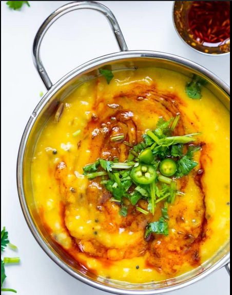

Daal

Description
Dal is one of the most important staple foods, alongside vegetables, of the Indian subcontinent. Its universal use throughout India, Bangladesh, Pakistan, Sri Lanka and Bhutan gives credence to its ease of use, health giving properties, amazing taste and accessibility to all.
As a primarily lentil based dish dal is a great ‘comfort’ food. Seemingly endless different, delicious variations, each with their own taste and smell, make it an essential part of any Indian diet.
Ingredients
- 1 cup toor daal (lentils)
- 1/2 cup chana dal (lentils)
- 1 tablespoon crushed ginger
- 2 finely chopped green chilli
- 1 teaspoon red chilli powder
- 8 cup water
- salt as required
- 2 crushed lightly dry red chili
- 4 tablespoon chopped coriander leaves
- 1 teaspoon cumin seeds
- 1/2 teaspoon powdered turmeric
- 2 finely chopped tomato
- 1 1/2 tablespoon crushed garlic
- 2 medium sliced onion
- 8 teaspoon ghee
Steps
- Dal Recipe is a blend of delicious dal and spices. Here's how you can make it at home. Take a pressure cooker and fill it with 4 cups of water. Now, add toor dal, chana dal and masoor dal in water. Add salt in the cooker, close the lid and cook it on a medium flame for 5 whistles and then turn off the flame. Keep the cooker aside.
- Now take a non-stick pan and heat 4 tsp. ghee on a medium flame. Then add 1 tbsp chopped garlic and ginger. When garlic becomes light brown, add sliced onions. Add chopped green chilli.
- Add spices & cook until the vegetables until tender
Saute until onions are translucent. Add chopped tomatoes and season it with turmeric and red chilli powder. Cook until tomatoes become tender.
- Add cooked dal, water & let it simmer
Now open the lid of the cooker and add cooked dal in the pan. Also, add 2 cups of water and stir to mix well. Sprinkle salt and cook on a medium flame for 5 minutes. Let it cook and thicken.
- Prepare the tempering
Stir occasionally to check the consistency of dal, then remove from flame and carefully transfer it to a large bowl and keep it aside. Meanwhile, take a small pan, heat the remaining ghee on medium flame and add cumin seeds and crush two dry red chillies. Then add asafoetida and heat it for a few seconds.
- Pour the tempering over cooked dal & garnish before serving
Now pour the prepared tempering over cooked dal in the bowl. Garnish dal with chopped coriander leaves and remaining garlic. Serve while it’s hot.
Home